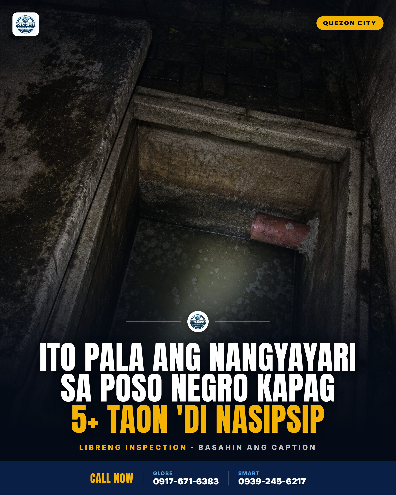
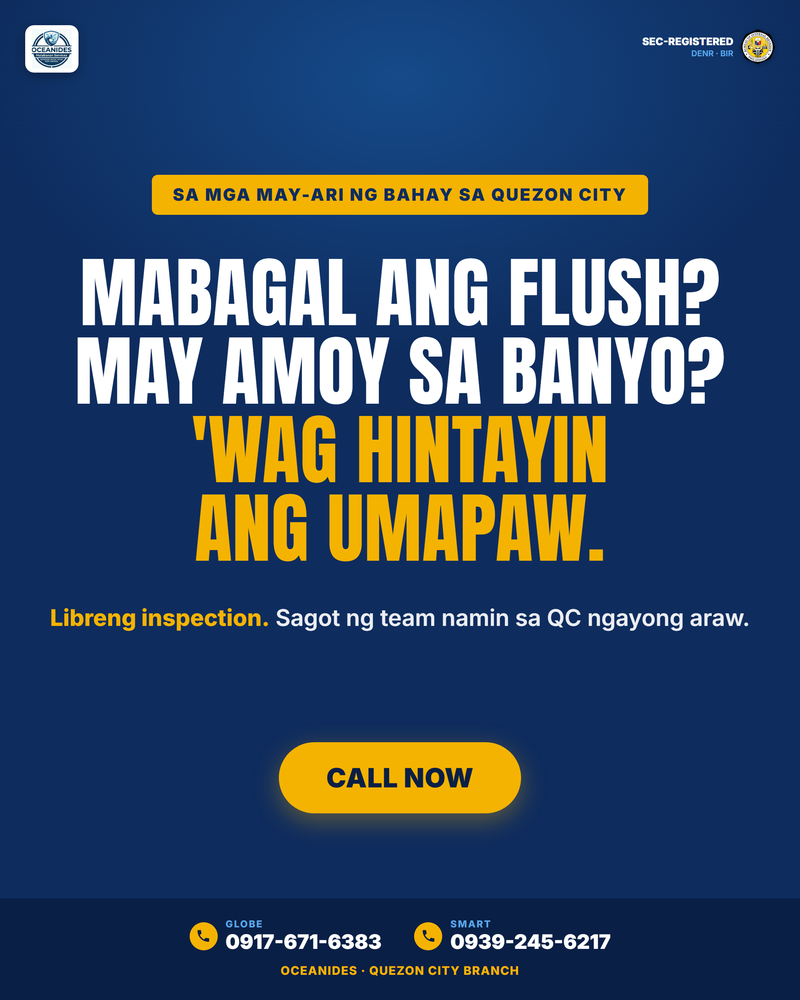
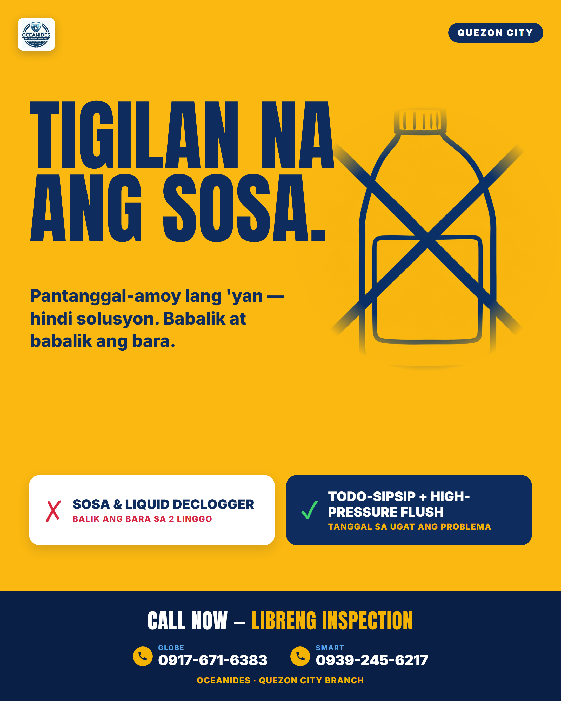
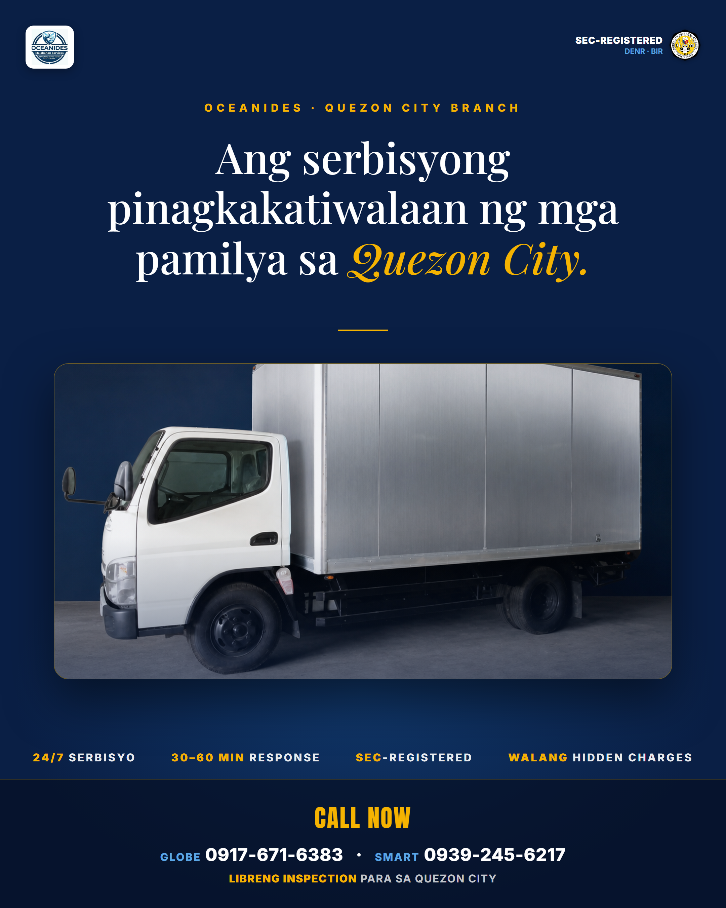
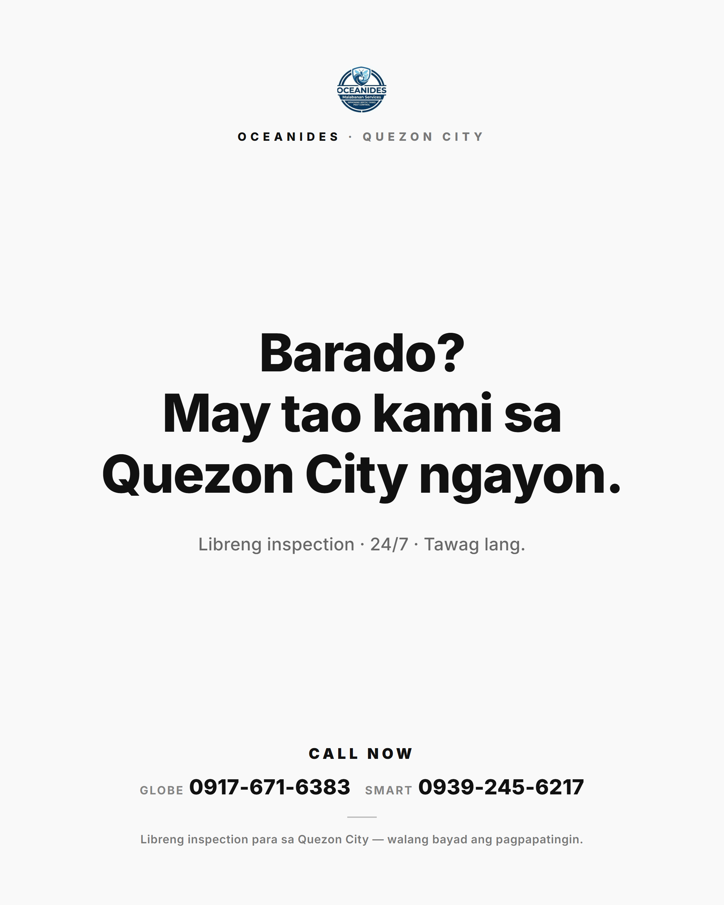
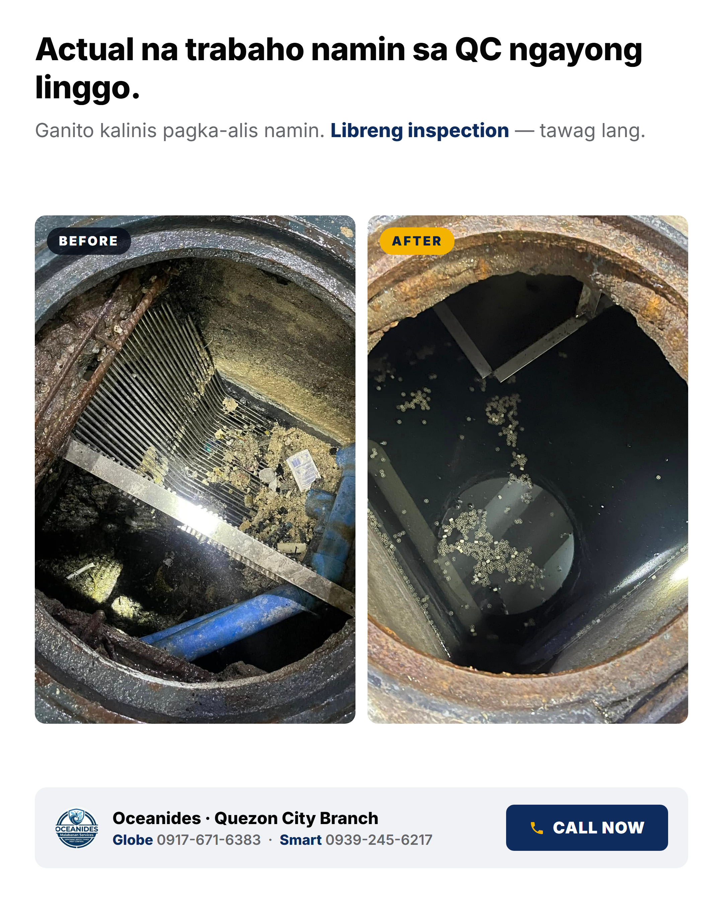

6 swipe-file-driven styles, tig-iisa bawat style. 1080×1350 (4:5) @2x. Lahat may: logo · QC branch · CALL NOW · libreng inspection · Globe 0917-671-6383 / Smart 0939-245-6217. Pumili ng winners → re-render per city (template variable lang ang city).

1 · News-graphic
chatgptricks strategy style
Dark photo + condensed caps headline sa baba, gold accent, logo watermark divider. Curiosity gap (S12).

2 · Niche callout
S8 audience callout (E5 Sabri format)
Eyebrow pill na nagpapangalan sa exact buyer + question-hook + gold CTA pill. Strongest pattern sa file (16×/7 brands).

3 · Format-enemy
Grüns-style loud flat-graphic (S24 + S14)
Full-canvas gold, giant navy type, kalaban ang DIY ritual (sosa) hindi ang kakumpitensya. Doodle plate via gpt-image-2.

4 · Premium
IM8-style premium-editorial (S18 + S16 + S15)
Serif headline, framed van photo, SEC/DENR/BIR authority, stat-stack. Restrained at premium.

5 · Minimal
OpenAI-style anti-design (S9 / E51)
Two-color black & white, isang malaking statement. Pattern interrupt sa feed na puno ng kulay.

6 · UGC
Native-format, crew voice (S21 honest version)
Headline + subheadline + REAL before/after job photos. Walang fake testimonial — boses ng crew mismo.